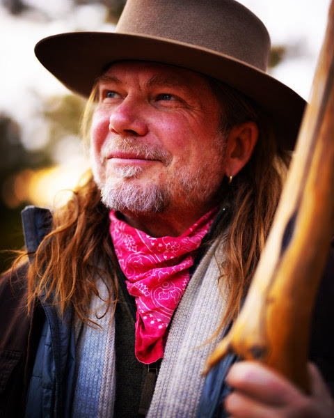
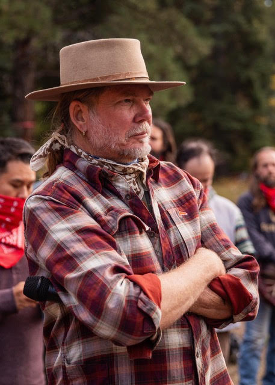
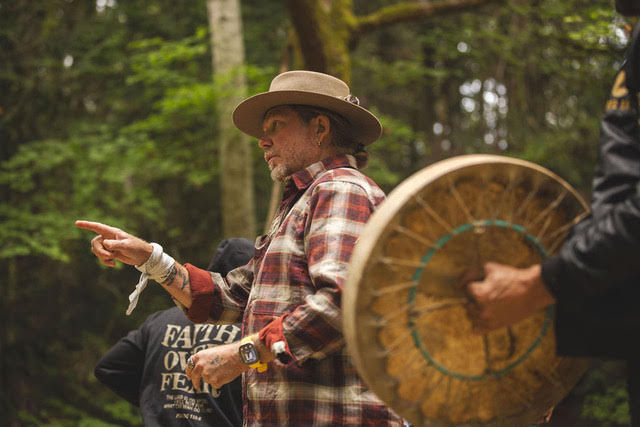

Become the facilitator people trust in the moments that matter most.



Men's Work Facilitation Training is an elevated, experiential training for people who want to develop the skill, maturity, and presence to guide transformational inner work in others. This is not theory-only learning. It is a premium, practice-based experience designed to strengthen embodied leadership through direct experience, guided facilitation, and clear feedback.
Whether you are in private practice, leading circles and workshops, or holding men's and women's experiences, this training is designed to deepen your capacity, sharpen your discernment, and expand your range as a facilitator.
Areas of focus will include presence, ethical integrity, self-awareness, and the ability to create safe, grounded space for others.
Many people feel called to help others. Far fewer are trained to do so ethically, skillfully, and with real presence. Strong facilitation depends on more than confidence or charisma — it requires emotional attunement, humility, discernment, and the capacity to hold complexity without losing center.
In transformational spaces, the quality of your presence matters as much as your method. The most effective leaders are able to stay grounded under pressure, create safety, and respond to what is happening in the room rather than forcing an agenda.
Men's Work Facilitation Training exists to support that level of development.
This is not a course you simply watch. It is an experience you enter.
Participants learn through live demonstration, guided participation, facilitated practice, and direct feedback. Deeply experiential, this training develops real-world capability, not just conceptual understanding.
Live demonstrations of facilitation techniques in real time, with debrief and context.
Enter guided processes as a participant — experiencing what you'll later hold for others.
Step in to lead with full support — practicing in a held, safe environment.
Clear, honest, growth-oriented feedback that accelerates your development.
This is where technique becomes embodiment.
By the end of Men's Work Facilitation Training, you will walk away with:
This is the kind of development that changes how you show up in the room, not just how you speak about your work.
Especially well-suited for facilitators, coaches, practitioners, circle leaders, and emerging leaders who want to expand their capacity and credibility.
Men's Work Facilitation Training is for people who understand that real facilitation starts with who you are, not just what you know.
Men's Work Facilitation Training is designed to be both rigorous and spacious. You will be invited to step into a learning environment that values precision, honesty, depth, and care.
Rather than teaching from theory alone, the training is structured to help you integrate through experience, reflection, and practice. That is what allows learning to move from concept into embodied skill.
You will be supported to develop not only your methods, but also the inner qualities that make your facilitation trustworthy.
Learn to facilitate from presence, ethics, and embodied wisdom.
Become the kind of person others trust in moments that truly matter.